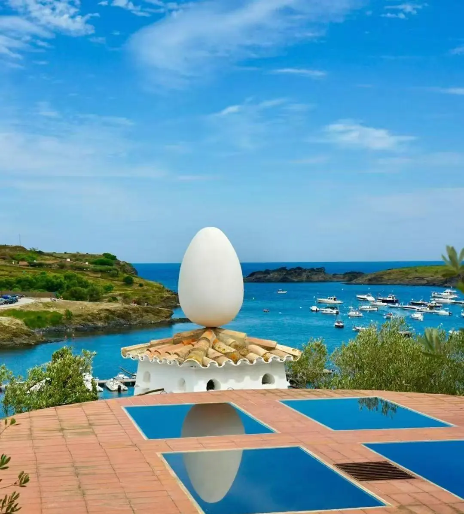
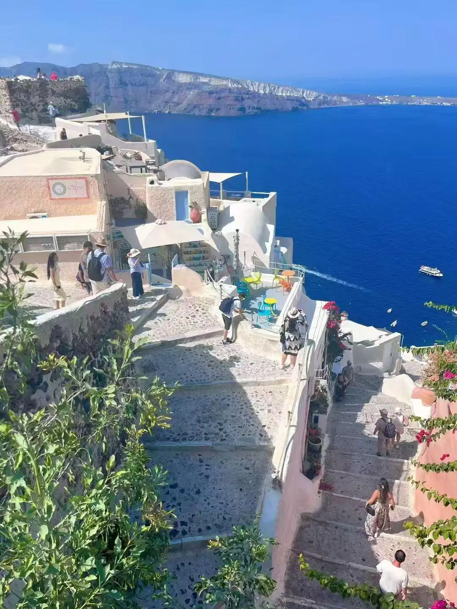

Wherever you want
We recommend the most authentic China, and Chinese culture in its true flavour, so that a leisure holiday leaves a lasting impression — a journey well worth making.
Shanghai · founded July 2025
Who we are
Enlight was founded in Shanghai in July 2025. The company is formally Shanghai Zhongli Xunxi Travel Consulting Service Co., Ltd.
We work to connect travel with a person’s own career planning. A journey is a chance to rest and recover, and also a healing space in which to plan your future and your work more clearly.
We shape every itinerary around a genuine sense of holiday, and we look for the best value at every step, so that travel can be the poetry and the far horizon that ordinary life can still reach.

How we work
Travel shaped around your interests, your pace, and the way you like to go.
We recommend the most authentic China, and Chinese culture in its true flavour, so that a leisure holiday leaves a lasting impression — a journey well worth making.
A dedicated travel specialist stays with you, with concierge help and assistance around the clock. We adapt as the days change, so the journey remains flexible and is guided with a sure hand.
With family, as a couple, with friends or in a small group; for a short stay or a longer passage through China. The journey is cut to your preferences, with the quiet support that makes it feel seamless.
The work
Four ways of holding a journey, from the first conversation to the flight home.
01
Journeys drawn to a particular brief: a family holiday, a study tour or campus visit, business travel, and help with the visa if you need it.
02
The practical groundwork — visa applications, advice on what to pack, a local SIM or a data card — so the first day is already in hand.
03
Hotels, flights, trains, ferries, chartered cars and tickets, chosen for value as well as for fit. If a hotel we have booked drops in price, we rebook it, so that you have the better rate.
04
Someone in reach for the whole of the journey: reminders, a little cultural context as the days unfold, and a companion in person if you ask for one.
How it began
“I spent many years at the CCTV Movie Channel, where I learned how to organise and run projects. Later I made a life in France, married, and had children. Studying in Britain at thirty is what first sent me travelling in earnest.
During the pandemic I drew up a ten-year plan of travel. True to the old advice that one should read ten thousand books and walk ten thousand miles, we decided to use the five French school holidays each year to see the world again, this time through our children’s eyes.
After the lockdowns we crossed from Paris to New York, went on to Chicago, and drove Route 66: about three weeks on the road, ending at Santa Monica, then north along California’s Highway 1 to San Francisco, and a long rest in Florida. What I took from that drive is simple: the road is long, and you should not be in a hurry to reach the end of it.
In the summer of 2023 we flew Paris–Miami–Lima and followed the Inca road to Cusco and Machu Picchu. Flying over Cuba while reading of Columbus; riding the Pan-American Highway; watching the Nazca lines pass under a small plane, close and somehow not quite real — I was in tears.”
— Founder of Enlight
Recent work · 2025
A few recent itineraries, described by the kind of trip they were. The people who travelled them are not named here.
A traveller finishing a master’s degree in Britain decided, at short notice, on a graduation journey. We designed a twenty-day route in three days, and had every booking confirmed within two.
A summer school-visit journey. We accompanied the family through Cambridge, and talked through the particular character of a collegiate university — what is distinctive about it, and what it is for.
A local driver-guide travelled with the group throughout, and the journey was edited into a keepsake film.

Make an enquiry
By filling up this form, you help us better understand your needs and wants in order to recommend an itinerary that matches you.